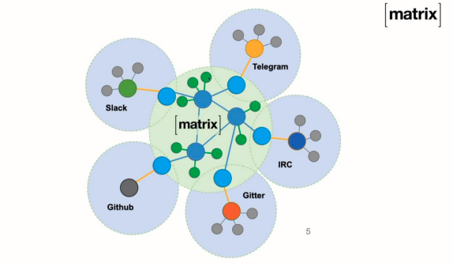
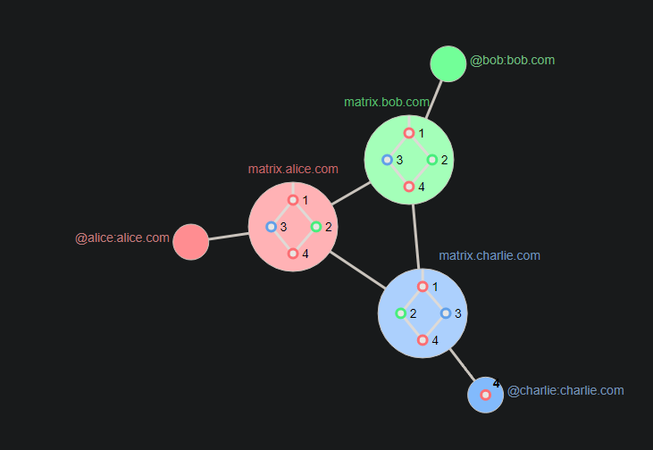

| What is Matrix
It’s a very simple Http web API for sending and receiving real-time content. An open network for security, decentralized, communication (P2P home-server).

No single party owns your conversations. Conversations are shared over all participants. It means that you share your copy of the conversation with them. It’s like block chain. Whatsapp, facebook … can never access your conversations.
So it’s not on one server, the whole point is that it replicated over like 1000 of servers depending on how many servers are participating in the conversation.
- For sending messages: Http/Post
- For receiving messages: Http/Get
- It works with Json APIs:
It’s all a group messaging so even if it’s 1:1, It means there are 2 servers at least.
It’s not just for messaging also you can do voice calls (VoIP), Read receipts, server-side search, even VR.

It works like fork on Git.
- Matrix owes its name to its ability to bridge existing platforms into a global open matrix of communication. Bridges are core to Matrix and designed to be as easy to write as possible, with Matrix providing the highest common denominator language to link the networks together.
- Source:
Matrix Website
What is Matrix - Wrote:
- Updated:
- Posted: November 24, 2022 | Azar 3, 1401